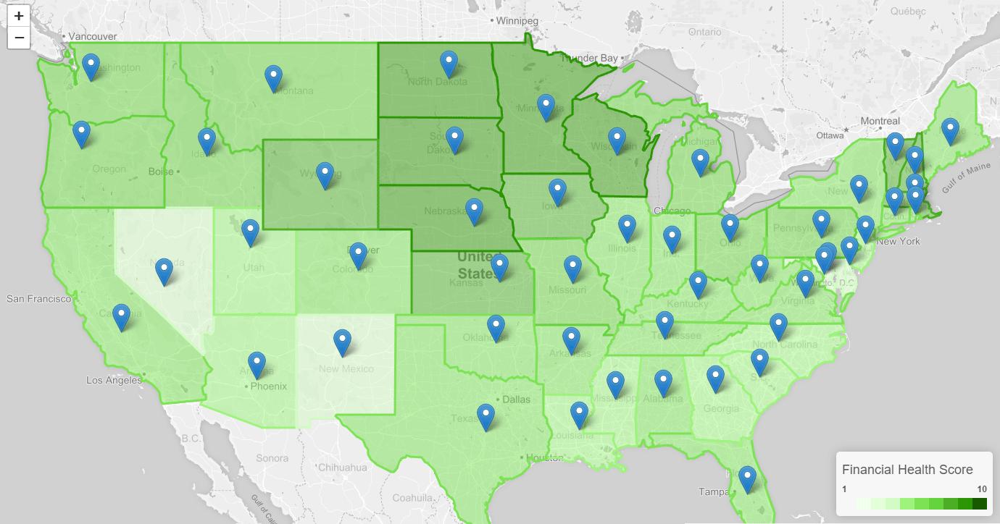

Choropleth Map
In this visualization, we gathered data from multiple sources, including Experian, consumerfinance.gov, and the
New York Fed Exchange.
The data collected via multiple data sources was munged and cleaned using Python with Pandas and Jupyter Notebook. A sqlite database was then created
based on the primary data and tables needed for our calculations and visualizations. One of these calculations was to determine an "overall financial wellness" score - this involved
binning the average state records for credit score, debt to income ratio, and >90 days delinquent on mortgage loans. Based on these binned scores per state, we were able to assign an
overall score per state (1-10) for financial health. In addition, we wanted users to be able to consider Financial education in each state and whether or not it may contribute to the
overall score. Included in the state information, we've chosen to display the grade assigned to that state based on their graduation requirements regarding financial education. This data
was pulled in for use via our flask application where we queried the sqlite database and created functions within both the flask app and javascript to assign colors based on scores,
build the map and apply colors by state, as well as to create markers and related pop-up information for each state.

D3 Bubble Plot
The last area we wanted users to explore is the potential errors in the current credit reporting system.
Data was gathered and cleaned (also via Python with Pandas and Jupyter Notebook) from the Consumer Financial Protection Bureau on complaints from 2017 for debt collection, payday lenders, vehicle loans, mortgage loans, student loans,
credit reporting and credit cards. In the interest of time, we decided to narrow down complaint data those records specifically impacting Credit Reporting and Repair. This involved
creating a python Flask route ('/complaints') where lists were created from SQLAlchemy queries which included calculations and a table join for both complaints data and overall state data.
We were able to pull in data from this route via d3 and Plotly JS to create an interactive scatterplot to show how rate of complaints may or may not correlate with average credit scores in
a given state. This data may be the hardest to extrapolate from since participation in the program is limited to those aware of it and therefore may not be an accurate representation of
consumer complaints.